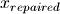
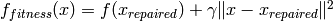
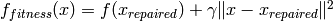

Main functions and classes¶
This section details the usage of the Playdoh functions that are used to launch computations.
Independent parallel problems¶
- playdoh.map(fun, **kwds)¶
Parallel version of the built-in map function. Executes the function fun with the arguments *argss and keyword arguments **kwdss across CPUs on one or several computers. Each argument and keyword argument is a list with the arguments of every job. This function returns the result as a list, one item per job. If an exception occurs within the function, map() returns the Exception object as a result. This object has an extra attribute, traceback, which contains the traceback of the exception.
Special keyword arguments:
- cpu=MAXCPU
- Total number of CPUs to distribute the function over. If machines is not specified or is an empty list, only CPUs on the local computer will be used. The total number of CPUs is obtained with the global variable MAXCPU. By default, all CPUs on the machine are used.
- gpu=0
If the function loads CUDA code using the PyCUDA package, Playdoh is able to distribute it across GPUs on one or several machines. In this case, gpu is the total number of GPUs to use and works the same way as cpu.
See also
User guide Using GPUs.
- machines=[]
- The list of computers to distribute the function over. Items can be either IP addresses as strings, or tuples ('IP', port) where port is an integer giving the port over which the Playdoh server is listening on the remote computer. The default port is obtained with the global variable DEFAULT_PORT.
- allocation=None
Resource allocation is normally done automatically assuming that all CPUs are equivalent. However, it can also be done manually by specifying the number of CPUs to use on every computer. It is done with the allocate() function.
See also
User guide for Resource allocation.
- shared_data={}
Large data objects (NumPy arrays) can be shared across CPUs running on the same computer, but they must be read-only. The shared_data argument is a dictionary: keys are variable names and values are large NumPy arrays that should be stored in shared memory on every computer if possible.
See also
User guide for Shared data.
- codedependencies=[]
If the function to distribute uses external Python modules, these modules must be transported to every machine along with the function code. The codedependencies argument contains the list of these modules’ pathnames relatively to the directory where the function’s module is defined.
See also
User guide for Code transport.
- playdoh.map_async(fun, **kwds)¶
Asynchronous version of map. Return a JobRun object which allows to poll the jobs’ status asynchronously and retrieve the results later.
The map() function is equivalent to map_async(...).get_results().
- class playdoh.JobRun¶
Contains information about a parallel map that has been launched by the map_async function.
Methods:
- get_status()
- Returns the current status of the jobs.
- get_result(jobids=None)
- Returns the result. Blocks until the jobs have finished. You can specify jobids to retrieve only some of the results, in that case it must be a list of job identifiers.
See also
User guide for Independent parallel problems.
Optimization¶
- playdoh.minimize(fun, **kwds)¶
Minimize a fitness function in parallel across CPUs on one or several computers.
Arguments:
- fitness
The first argument is the fitness function. There are four possibilities: it can be a Python function or a Python class (deriving from Fitness). It can also accept either keyword named arguments (like fitness(**kwds)) or a DxN matrix (like fitness(X)) where there are D dimensions in the parameter space and N particles.
Using a class rather than a function allows to implement an initialization step at the beginning of the optimization. See the reference for Fitness.
If the fitness is a simple keyword-like Python function, it must have the right keyword arguments. For example, if there are two parameters x and y to optimize, the fitness function must be like def fitness(x,y):. If it’s a matrix-like function, it must accept a single argument which is a matrix: def fitness(X):.
Fitness functions can also accept static arguments, given in the minimize() functions and alike with the args and kwds parameters (see below).
In addition, the fitness function can accept several special keyword arguments:
- dimension
- The dimension of the state space, or the number of optimizing parameters
- popsize
- The total population size for each group across all nodes.
- subpopsize
- The population size for each group on this node.
- groups
- The number of groups.
- nodesize
- The population size for all groups on this node.
- nodecount
- The number of nodes used for this optimization.
- shared_data
- The dictionary with shared data.
- unit_type
- The unit type, CPU or GPU.
For example, use the following syntax to retrieve within the function the shared data dictionary and the size of the population on the current node: def fitness(X, shared_data, nodesize):.
- popsize=100
- Size of the population. If there are several groups, it is the size of the population for every group.
- maxiter=5
- Maximum number of iterations.
- algorithm=PSO
- Optimization algorithm. For now, it can be PSO, GA or CMAES.
- allocation=None
Allocation object.
See also
User guide for Resource allocation.
- shared_data={}
Dictionary containing shared data between CPUs on a same computer.
See also
User guide for Shared data.
- groups=1
Number of groups. Allows to optimize independently several populations by using a single vectorized call to the fitness function at every iteration.
See also
User guide for Optimization groups.
- cpu=MAXCPU
- Total number of CPUs to use.
- gpu=0
- If the fitness function loads CUDA code using the PyCUDA package, several GPUs can be used. In this case, gpu is the total number of GPUs.
- codedependencies=[]
List of dependent modules.
See also
User guide for Code transport.
- optparams={}
- Optimization algorithm parameters. It is a dictionary: keys are parameter names, values are parameter values or lists of parameters (one value per group). This argument is specific to the optimization algorithm used. See PSO, GA, CMAES.
- machines=[]
- List of machines to distribute the optimization over.
- scaling=None
- Specify the scaling used for the parameters during the optimization. It can be None or 'mapminmax'. It is None by default (no scaling), and mapminmax by default for the CMAES algorithm.
- returninfo=False
- Boolean specifying whether information about the optimization should be returned with the results.
- args=()
- With fitness functions, arguments of the fitness function in addition of the optimizing parameters. With fitness classes, arguments of the initialize method of the Fitness class. When using a fitness keyword-like function, the arguments must be before the optimizing parameters, i.e. like def fitness(arg1, arg2, x1, x2):.
- kwds={}
- With fitness functions, keyword arguments of the fitness function in addition of the optimizing parameters. With fitness classes, keyword arguments of the initialize method of the Fitness class.
- bounds=None
- Used with array-like fitness functions only. This argument is a Dx2 NumPy array with the boundaries of the parameter space. The first column contains the minimum values acceptable for the parameters (or -inf), the second column contains the maximum values (or +inf).
- initrange=None
- Used with array-like fitness functions only. This argument is a Dx2 NumPy array with the initial range in which the parameters should be sampled at the algorithm initialization.
- **params
- Used with keyword-like fitness functions only. For every parameter <paramname>, the initial sampling interval can be specified with the keyword <paramname>_initrange which is a tuple with two values (min,max). The boundaries can be specified with the keyword <paramname>_bound which is a tuple with two values (min,max). For example, if there is a single parameter in the fitness function, def fitness(x):, use the following syntax: minimize(..., x_initrange=(-1,1), x_bounds=(-10,10)).
Return an OptimizationResult object with the following attributes:
- best_pos
- Minimizing position found by the algorithm. For array-like fitness functions, it is a single vector if there is one group, or a list of vectors. For keyword-like fitness functions, it is a dictionary where keys are parameter names and values are numeric values. If there are several groups, it is a list of dictionaries.
- best_fit
- The value of the fitness function for the best positions. It is a single value if there is one group, or it is a list if there are several groups.
- info
A dictionary containing various information about the optimization.
See also
User guide for Optimization information.
- playdoh.maximize(fun, **kwds)¶
Maximize a fitness function in parallel across CPUs on one or several computers. Completely analogous to minimize().
- playdoh.minimize_async(fun, **kwds)¶
Asynchronous version of minimize(). Returns an OptimizationRun object.
- playdoh.maximize_async(fun, **kwds)¶
Asynchronous version of maximize(). Returns an OptimizationRun object.
- playdoh.print_table(results, precision=4, colwidth=16)¶
Displays the results of an optimization in a table.
Arguments:
- results
- The results returned by the minimize of maximize function.
- precision = 4
- The number of decimals to print for the parameter values.
- colwidth = 16
- The width of the columns in the table.
- class playdoh.Fitness¶
The base class from which any fitness class must derive. When using several CPUs or several machines, every node contains its own instance of this class. The derived class must implement two methods:
- initialize(self, *args, **kwds)
- This method initializes the fitness function at the beginning of the optimization. The arguments are provided from an optimization function like minimize() or maximize(), with the parameters args and kwds.
- evaluate(self, **kwds).
- This method evaluates the fitness against particle positions. For keyword-like fitness functions, kwds is a dictionary where keys are parameter names, and values are vectors of parameter values. This method must return a vector with fitness values for all particles.
In addition, several properties are available in this class:
- self.dimension
- The dimension of the state space, or the number of optimizing
- parameters
- self.popsize
- The total population size for each group across all nodes.
- self.subpopsize
- The population size for each group on this node.
- self.groups
- The number of groups.
- self.nodesize
- The population size for all groups on this node.
- self.nodecount
- The number of nodes used for this optimization.
- self.shared_data
- The dictionary with shared data.
- self.unit_type
- The unit type, CPU or GPU.
- class playdoh.PSO(index, nodes, tubes, popsize, subpopsize, nodesize, groups, return_info, maxiter, scaling, parameters, optparams)¶
Particle Swarm Optimization algorithm. See the wikipedia entry on PSO.
Optimization parameters:
- omega
- The parameter omega is the “inertial constant”
- cl
- cl is the “local best” constant affecting how much
- the particle’s personal best position influences its movement.
- cg
- cg is the “global best” constant affecting how much the global best position influences each particle’s movement.
See the wikipedia entry on PSO for more details (note that they use c_1 and c_2 instead of cl and cg). Reasonable values are (.9, .5, 1.5), but experimentation with other values is a good idea.
- class playdoh.CMAES(index, nodes, tubes, popsize, subpopsize, nodesize, groups, return_info, maxiter, scaling, parameters, optparams)¶
Covariance Matrix Adaptation Evolution Strategy algorithm See the wikipedia entry on CMAES and also the author’s website <http://www.lri.fr/~hansen/cmaesintro.html>`
Optimization parameters:
- proportion_selective = 0.5
- This parameter (refered to as mu in the CMAES algorithm) is the proportion (out of 1) of the entire population that is selected and used to update the generative distribution. (note for different groups case: this parameter can only have one value, i.e. every group will have the same value (the first of the list))
- bound_strategy = 1:
In the case of a bounded problem, there are two ways to handle the new generated points which fall outside the boundaries. (note for different groups case: this parameter can only have one value, i.e. every group will have the same value (the first of the list))
bound_strategy = 1. With this strategy, every point outside the domain is repaired, i.e. it is projected to its nearset possible value . In other words, components that are infeasible in
 are set to the (closest) boundary value
in The fitness function on the repaired search
points is evaluated and a penalty which depends on the distance to
the repaired solution is added

The repaired solution is disregarded afterwards.
are set to the (closest) boundary value
in The fitness function on the repaired search
points is evaluated and a penalty which depends on the distance to
the repaired solution is added

The repaired solution is disregarded afterwards.bound_strategy = 2. With this strategy any infeasible solution x is resampled until it become feasible. It should be used only if the optimal solution is not close to the infeasible domain.
See p.28 of <http://www.lri.fr/~hansen/cmatutorial.pdf> for more details gamma:
gamma is the weight
 in the previously introduced
penalty function. (note for different groups case: this parameter can
only have one value, i.e. every group will have the same
value (the first of the list))
in the previously introduced
penalty function. (note for different groups case: this parameter can
only have one value, i.e. every group will have the same
value (the first of the list))
- class playdoh.GA(index, nodes, tubes, popsize, subpopsize, nodesize, groups, return_info, maxiter, scaling, parameters, optparams)¶
Standard genetic algorithm. See the wikipedia entry on GA
If more than one worker is used, it works in an island topology, i.e. as a coarse - grained parallel genetic algorithms which assumes a population on each of the computer nodes and migration of individuals among the nodes.
Optimization parameters:
- proportion_parents = 1
- proportion (out of 1) of the entire population taken as potential parents.
- migration_time_interval = 20
- whenever more than one worker is used, it is the number of iteration at which a migration happens. (note for different groups case: this parameter can only have one value, i.e. every group will have the same value (the first of the list))
- proportion_migration = 0.2
- proportion (out of 1) of the island population that will migrate to the next island (the best one) and also the worst that will be replaced by the best of the previous island. (note for different groups case: this parameter can only have one value, i.e. every group will have the same value (the first of the list))
- proportion_xover = 0.65
- proportion (out of 1) of the entire population which will undergo a cross over.
- proportion_elite = 0.05
proportion (out of 1) of the entire population which will be kept for the next generation based on their best fitness.
- The proportion of mutation is automatically set to
- 1 - proportion_xover - proportion_elite.
- func_selection = 'stoch_uniform'
- This function define the way the parents are chosen (it is the only one available). It lays out a line in which each parent corresponds to a section of the line of length proportional to its scaled value. The algorithm moves along the line in steps of equal size. At each step, the algorithm allocates a parent from the section it lands on. The first step is a uniform random number less than the step size.
func_xover = 'intermediate'
- func_xover specifies the function that performs the crossover.
- The following ones are available:
- intermediate: creates children by taking a random weighted average
of the parents. You can specify the weights by a single parameter, ratio_xover (which is 0.5 by default). The function creates the child from parent1 and parent2 using the following formula:
child = parent1 + rand * Ratio * ( parent2 - parent1)
- discrete_random: creates a random binary vector and selects the
genes where the vector is a 1 from the first parent, and the gene where the vector is a 0 from the second parent, and combines the genes to form the child.
one_point: chooses a random integer n between 1 and ndimensions and then selects vector entries numbered less than or equal to n from the first parent. It then Selects vector entries numbered greater than n from the second parent. Finally, it concatenates these entries to form a child vector.
- two_points: it selects two random integers m and n between 1 and
ndimensions. The function selects vector entries numbered less than or equal to m from the first parent. Then it selects vector entries numbered from m + 1 to n, inclusive, from the second parent. Then it selects vector entries numbered greater than n from the first parent. The algorithm then concatenates these genes to form a single gene.
heuristic: returns a child that lies on the line containing the two parents, a small distance away from the parent with the better fitness value in the direction away from the parent with the worse fitness value. You can specify how far the child is from the better parent by the parameter ratio_xover (which is 0.5 by default)
linear_combination: creates children that are linear combinations of the two parents with the parameter ratio_xover (which is 0.5 by default and should be between 0 and 1):
child = parent1 + Ratio * ( parent2 - parent1)
For ratio_xover = 0.5 every child is an arithmetic mean of two parents.
func_mutation = 'gaussian'
This function define how the genetic algorithm makes small random changes in the individuals in the population to create mutation children. Mutation provides genetic diversity and enable the genetic algorithm to search a broader space. Different options are available:
gaussian: adds a random number taken from a Gaussian distribution with mean 0 to each entry of the parent vector.
The ‘scale_mutation’ parameter (0.8 by default) determines the standard deviation at the first generation by scale_mutation * (Xmax - Xmin) where Xmax and Xmin are the boundaries.
The ‘shrink_mutation’ parameter (0.2 by default) controls how the standard deviation shrinks as generations go by:
:math:`sigma_{i} = \sigma_{i-1}(1-shrink_{mutation} * i/maxiter)` at iteration i.uniform: The algorithm selects a fraction of the vector entries of an individual for mutation, where each entry has a probability mutation_rate (default is 0.1) of being mutated. In the second step, the algorithm replaces each selected entry by a random number selected uniformly from the range for that entry.
- class playdoh.OptimizationRun¶
Contains information about a parallel optimization that has been launched with the minimize_async or maximize_async function.
Methods:
- get_info()
- Return information about the current optimization asynchronously.
- get_result()
- Return the result as an OptimizationResult instance. Block until the optimization has finished.
- class playdoh.OptimizationResult¶
Type of objects returned by optimization functions.
Attributes:
- best_pos
- Minimizing position found by the algorithm. For array-like fitness functions, it is a single vector if there is one group, or a list of vectors. For keyword-like fitness functions, it is a dictionary where keys are parameter names and values are numeric values. If there are several groups, it is a list of dictionaries.
- best_fit
- The value of the fitness function for the best positions. It is a single value i there is one group, or it is a list if there are several groups.
- info
- A dictionary containing various information about the optimization.
Also, the following syntax is possible with an OptimizationResult instance or. The key is either an optimizing parameter name for keyword-like fitness functions, or a dimension index for array-like fitness functions.
- or[key]
- it is the best key parameter found (single value), or the list of the best parameters key found for all groups.
- or[i]
- where i is a group index. This object has attributes best_pos, best_fit, info but only for group i.
- or[i][key]
- where i is a group index, is the same as or[i].best_pos[key].
See also
User guide for Optimization.
Loosely coupled parallel problems¶
- playdoh.start_task()¶
Launches a parallel task across CPUs on one or several computers.
Arguments:
- task_class
- The class implementing the task, must derive from the base class ParallelTask.
- task_id=None
- The name of this particular task run. It should be unique, by default it is randomly generated based on the date and time of the launch. It is used to retrieve the results.
- topology=[]
- The network topology. It defines the list of tubes used by the task. It is a list of tuples (tubename, source, target) where tubename is the name of the tube, source is an integer giving the node index of the source, target is the node index of the target. Node indices start at 0.
- cpu=None
- The total number of CPUs to use.
- gpu=None
- When using GPUs, the total number of GPUs to use.
- machines=[]
- The list of machine IP addresses to launch the task over.
- allocation=None
- The allocation object returned by the allocate function.
- codedependencies
- The list of module dependencies.
- shared_data={}
- Shared data.
- args=()
- The arguments to the initialize method of the task. Every argument item is a list with one element per node.
- kwds={}
- The keyword arguments to the initialize method of the task. Every value is a list with one element per node.
- class playdoh.ParallelTask¶
The base class from which any parallel task must derive.
Three methods must be implemented:
- initialize(self, *args, **kwds)
- Initialization function, with any arguments and keyword arguments, which are specified at runtime in the start_task() function.
- start(self)
- Start the task.
- get_result(self)
- Return the result.
One method can be implemented.
- get_info(self)
- Return information about the task. Can be called asynchronously at any time by the client, to obtain for example the current iteration number.
Two methods from the base class are available:
- push(self, name, data)
- Put some data into the tube name. Named tubes are associated to a single source and a single target. Only the source can call this method. Note that several tubes in the network can have the same name, but two tubes entering or exiting a given node cannot have the same name.
- pop(self, name)
- Pop data in the tube name: return the first item in the tube (FIFO queue) and remove it. If the tube is empty, block until the source put some data into it. The call to this method is equivalent to a synchronisation barrier.
Finally, the following read-only attributes are available:
- self.index
- The index of the current node, between 0 and n-1 if there are n nodes in the network.
- self.unitidx
- The index of the CPU or GPU on the machine running the current node.
- self.shared_data
- The shared data dictionary (see Shared data).
- self.unit_type
- The unit type on this node, 'CPU' or 'GPU'.
- self.tubes_in
- The list of the incoming tube names on the current node.
- self.tubes_out
- The list of the outcoming tube names on the current node.
- class playdoh.TaskRun¶
Contains information about a parallel task that has been launched by the start_task() function.
Methods:
- get_info()
- Returns information about the current run asynchronously.
- get_result()
- Returns the result. Blocks until the task has finished.
See also
User guide for Loosely coupled parallel problems.